Substrate and Layer Material
Substrate and Layer Material
Navigation: OptiLayer Menu Commands > Data Menu > Substrate and Layer Material :nam
|
` <line_width_database.html>`__ ` <idh_menu_data.html>`__ ` <table_from_formula.html>`__ |
The Layer Material and Substrate/Incident/Exit Medium dialog windows assist in creating and modifying database files that describe the optical properties of Layer Materials and Substrates. The header of the dialog window indicates which material is currently being edited. In the screenshot below, the data file for the material “QUARTZ Disp. Data” in the Substrate database is being displayed. An isotropic material is defined by its complex refractive index, which comprises a real refractive index Re(n) and an imaginary component Im(n) that represents absorption (commonly referred to as the extinction coefficient).
To create a data file and set material optical properties in table format (located under the Table tab of the window), begin by entering the desired number of spectral points at which you wish to define the material refractive index in the ‘Spectral points’ field. For materials that are not dispersive, only one point is required. To input a refractive index value, select a cell in the Re(n) column and utilize standard editing options. To specify an extinction coefficient value, select a cell in the Im(n) column. For ease of editing, utilize the / Spreadsheet Editing Tools, which can be accessed through the Menu, Toolbar, or by using hotkeys. If you prefer to specify the refractive index using δ values (δ = 1 - Re(n)), particularly relevant for EUV and X-ray applications, you can switch between these conventions using the specialized combo box found in the caption of the Re(n) column. This allows for seamless modification of optical properties based on your specific requirements.
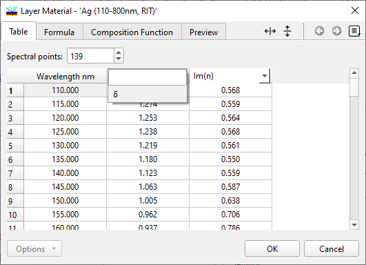
In the Layer Material Editor, the extinction coefficient Im(n) can also be specified as the Absorption coefficient. The definition for the Absorption coefficient is as follows: Absorption coefficient = 4π Im(n)/λ. This formula allows you to calculate and input the Absorption coefficient based on the provided values for Im(n) and the wavelength (λ). This feature provides an additional method for defining and adjusting the optical properties of the material within the Layer Material Editor.
./ 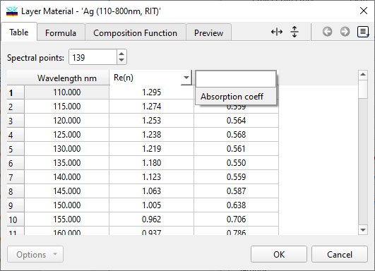
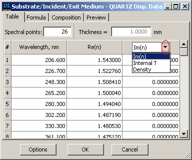
 / If the value of Thickness is changed, the Internal
transmittance will be recalculated using the updated thickness
value. This revised thickness value will then be utilized as the
default setting in other Substrate and Layer Material Editors.
/ If the value of Thickness is changed, the Internal
transmittance will be recalculated using the updated thickness
value. This revised thickness value will then be utilized as the
default setting in other Substrate and Layer Material Editors.
 / It is possible to specify Im(n) < 0 values (an
optically active substrate). For this purpose activate the
corresponding option using right-click menu.
/ It is possible to specify Im(n) < 0 values (an
optically active substrate). For this purpose activate the
corresponding option using right-click menu.
Formula
Another method to specify material properties is by utilizing the Formula tab within the edit dialog windows.
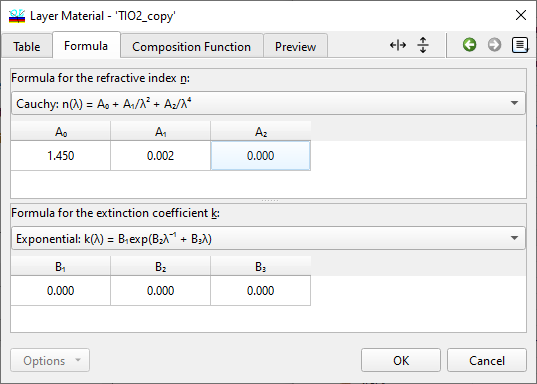
When working with material properties in the software, users have the option to select different formulas to describe the refractive index (Re(n)) or extinction coefficient (Im(n)) of a material. If a formula for either Re(n) or Im(n) is chosen on the Formula page, the corresponding column in the Table page will be grayed out and unavailable for editing.
Composition
You can create Composite materials, which are combinations of different materials from the current database, available under the Composition tab in the edit dialog windows. The refractive index of a composite material can be determined using the average weighted value of the dielectric permittivities, Bruggemann’s formula, or the average weighted value of refractive indices. It is possible to blend up to 5 distinct materials to form any Composite material. It is important to note that only materials defined through the Table or Formula tabs can be utilized to specify a Composite material.
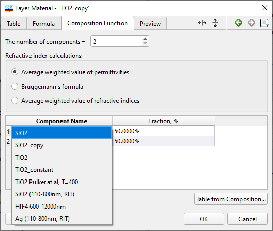
Changeable
OptiLayer offers the capability to utilize what are known as Changeable materials. These are artificial materials whose refractive indices and/or extinction coefficients can be adjusted during the optimization process, accessible through the Changeable tab in the edit dialog window. The Changeable tab feature is exclusively available within the Layer Material database. Employing Changeable materials facilitates index optimization, significantly broadening the possibilities for experimenting with optimizations of the merit function.
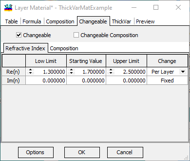
The “Changeable” check box activates the option to modify material properties. It is required to set the boundaries within which the material’s refractive index and extinction coefficient can vary, as well as their initial values. The “Change” column indicates the nature of permissible changes:
Fixed implies that the specific value remains constant and does not undergo alteration.
Per Material signifies that the refractive indices/extinction coefficients of all layers labeled with the material’s abbreviation will change in unison, effectively treating them as a single value.
Per Layer indicates that the refractive index/extinction coefficients of each marked layer can vary independently from one another.
Changeable materials are compatible with the “Refinement” and “Needle Optimization” features. It’s important to note that when using these options, the values of the refractive indices and extinction coefficients are included in the current design file and may be stored within the design database. The Design Editor includes a supplementary tab dedicated to editing the values of refractive indices and extinction coefficients. Additionally, there is a type of material known as Changeable Composition. This category serves as a blend between Changeable and Composite materials. A Changeable Composition material is configurable when its corresponding checkbox is selected, offering a dynamic approach to material composition within design optimization processes.
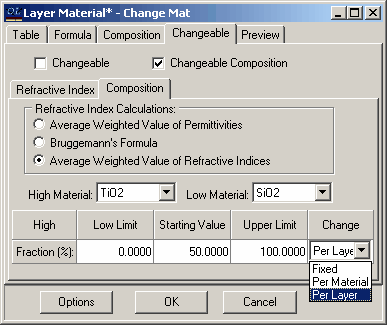
A Changeable Composition material is defined as a blend of two materials: High Material and Low Material, which can be selected from the current Material database. The variable parameter is the proportion of High Material in the mixture. During synthesis procedures, this proportion operates as an optimization parameter, in a manner similar to the refractive index value in Changeable type materials (as mentioned previously). For a Changeable Composition material, one can specify the limits, starting value, and change type for this fraction.
ThickVar
ThickVar materials possess optical properties that vary with the thickness of the layer. A common example of this type of material is metal-island films. Typically, the optical properties of such materials are determined for several characteristic thicknesses through characterization. It is assumed that these properties are stored in the Layer Material database, with the names reflecting these thicknesses for convenience. A ThickVar material is constructed as a collection of these material files. In this assembly, the corresponding thickness is indicated in the second column, while the names of the files are listed in the first one:
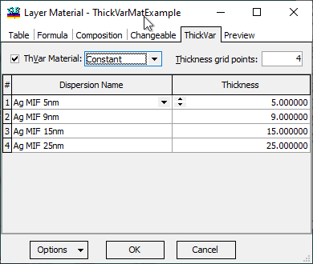
There are two distinct categories of ThickVar material, each defined by how the refractive index interacts with the physical characteristics of the layer: 1. Constant: In this type, the refractive index remains constant throughout the coating and is not influenced by the coating’s vertical position or coordinate. However, the specific value of the refractive index of a ThickVar layer is determined by the Thickness parameter. This type aptly describes the behavior of metal-island films, where the optical properties do not vary with position within the film but depend significantly on the volume or amount of material deposited. This reflects situations where the material’s behavior is homogeneous across the layer but varies according to how thick the layer is. 2. Profile: Unlike the Constant type, the refractive index in this case varies according to the coating’s coordinate. The refractive index for a Profile ThickVar material is determined based on two parameters: the coordinate ‘z’ (which represents depth or vertical position within the coating) and the wavelength ‘λ’. Essentially, the spreadsheet defining a Profile ThickVar material presents how the refractive index changes with depth into the material and with wavelength. The overall thickness of the layer dictates which segment of this defined refractive index profile is utilized for the current layer, offering a nuanced approach to modeling how the optical properties of a material can vary with depth and wavelength simultaneously.
|
Note: For all instances, linear interpolation is utilized to ascertain values within the provided grids for wavelength and thickness. In situations where a needed value falls outside the established bounds of the spreadsheet, those values are perpetuated as constants—specifically, they are extended to match the nearest available value documented within the spreadsheet. This approach is known as constant extrapolation. |
Inhomogeneity
The Inhomogeneity tab within the Layer Material Editor provides the functionality to define the degree of inhomogeneity for a material. This parameter can be determined and saved by OptiChar as an outcome of the Layer Characterization process, using the linear inhomogeneity model. Alternatively, users have the option to manually input this value. It is important to note that the inhomogeneity level set in this manner applies uniformly to all layers made of this material, regardless of their individual thicknesses.
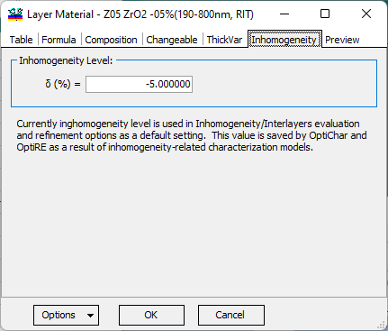
The definition of the Inhomogeneity Level is:
where n2 and n1 are refractive indices at the top and bottom boundaries of the layer and is the averaged refractive index.
In OptiLayer, this Inhomogeneity level serves as the default layer inhomogeneity whenever the design’s inhomogeneity is connected to this material (refer to Design Editor description). Calculations involving Inhomogeneity factors are executed solely when the / Inhomogeneities/Interlayers option is active.
Preview
To swiftly verify the material parameters inputted in the Layer Material and Substrate/Incident/Exit Medium dialog windows, utilizing the Preview tab within these windows proves to be convenient.
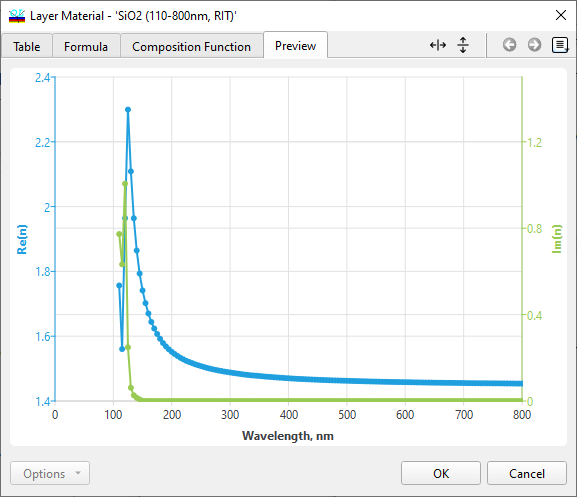
The Options button or the right-click menu offers functionalities to execute transformations among table, formula, and composite material presentations:
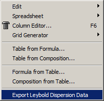
|
Note: The right-click menu also provides quick access to the “Export Bühler Leybold Dispersion Data” operation. |
See also: